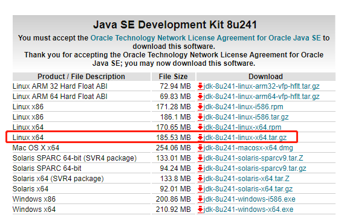
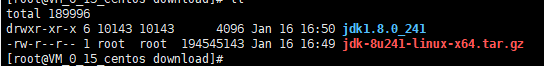
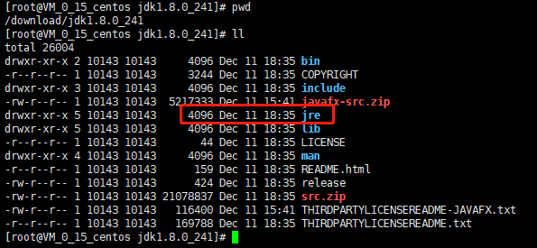
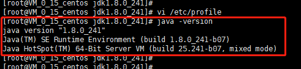

前言
前排提示
本文并不适合对于Linux不了解的新手，对于小白玩家或者新手，强烈推荐此篇教程【Linux&开服教程】从零开始的Linux服务器技术从萌新到入门教程
前段时间特价买了一台腾讯云服务器(1核2G)，由于比较忙，一直闲置状态。等到年底事情忙完了，就开始搭建一个我的世界服务器，准备春节和朋友一起联机游玩。
系统选择的是 CentOs 7，其他Linux系统操作类似，本文仅作为本人搭建的记录,并不严谨，仅供参考。
运行环境
操作系统：CentOS 7.6 64位
Java:jdk1.8.0_241
我的世界服务端Server:Paper-1.14.4-b236
我的世界客户端:Minecraft 1.14
SSH客户端:Xshell
FTP客户端:XFtp
准备一台作为服务器的主机
我买的是一台腾讯云服务器，阿里云或者其他云服务器类似，操作很简单。如何购买服务器以及初始化主机可以百度解决。

准备工作
远程连接服务器
使用任意SSH客户端连接到准备好的Linux服务器，我这里使用的是Xshell
新建两个文件夹，download以及minecraft_server。download文件夹用来存储下载的文件，我的世界服务端安装在minecraft_server文件夹。

下载Java
根据机器的情况选择对应版本，我选择的是Linux x64版本

安装Java
安装Java过程可以看Linux 下安装JDK1.8，我也记录下我的安装过程。
由于我是本地下载的java，所以下载完成后手动用ftp工具上传到之前创建的download目录，一般阿里云和腾讯云的服务器都自动开启了22端口，直接使用工具连接即可。
然后使用进入jdk-8u241-linux-x64.tar.gz所在目录
1 | cd /download |
解压jdk-8u241-linux-x64.tar.gz
1 | tar -zxvf jdk-8u241-linux-x64.tar.gz |
解压后完成后会看到jdk

要将jdk安装在usr/java当中，所以在usr目录下新建一个java文件夹
1 | mkdir /usr/java |
本人已测试，我的世界服务器server端仅需要jre即可运行，所以我们只需安装jre即可，先进入刚才解压好的java目录
1 | cd /download/jdk1.8.0_241 |

然后安装jre到/usr/java目录
1 | mv /download/jdk1.8.0_241/jre /usr/java |
接下来使用vim修改环境变量
1 | vim /etc/profile |
在文件末尾添加，其中JRE_HOME写刚才jre的安装路径
1 | export JRE_HOME=/usr/java/jre |

完毕后保存退出，在任意目录下执行java命令检查是否设置成功
1 | java -version |
显示java版本号即表示成功

安装我的世界服务器server端
首先进入刚才建好的minecraft_server目录，可以使用如下命令下载server端，我选择的是Paper-1.14.4-b23版本。
1 | wget https://yivesmirror.com/files/paper/Paper-1.14.4-b236.jar |
也可以去Yive’s Mirror自行选择下载任意版本，然后通过ftp工具上传到minecraft_server目录。
运行我的世界服务器server
进入目录，然后用java -jar命令启动运行文件
1 | cd minecraft_server/ |
等待运行完成

完成后输入stop关闭服务器，就可以看到目录下完整的配置文件了

新建后台启动脚本
我们使用screen工具来后台启动，所以先安装screen
1 | yum install screen |
安装完成后，使用touch命令新建启动脚本
1 | touch launch.sh |
然后编辑lauch.sh文件
1 | vim launch.sh |
添加下面的命令，其中-Xmx可以根据自己的机器内存情况适当调整
1 | screen -dmS mc java -Xms512m -Xmx1224m -XX:+AggressiveOpts -XX:+UseCompressedOops -jar /minecraft_server/Paper-1.14.4-b236.jar |
然后再新建关闭脚本并编辑
1 | touch stop.sh |
添加关闭命令
1 | screen -dr mc -X stuff "say 服务器将在10S后关闭！\n" |
两个脚本都创建好之后，使用chmod命令添加执行权限
1 | chmod +x launch.sh |
接下来就能看到launch.sh和stop.sh都变成可以执行文件了

大功告成之后我们就可以使用脚本来进行后台起停操作了
启动服务器
1 | ./launch.sh |
关闭服务器
1 | ./stop.sh |
其他事项
服务器参数配置
服务器参数使用server.properties文件及其他yml文件设置，具体设置可以参考Minecraft服务器优化教程 —— 让多带50%的玩家不再是梦
如何使用客户端并游玩
参见我的世界Minecraft Java版 下载指南|文件结构说明|推荐启动器
服务器运行状态查看
查看游戏目录安装目录下的/minecraft_server/logs文件夹的latest.log文件